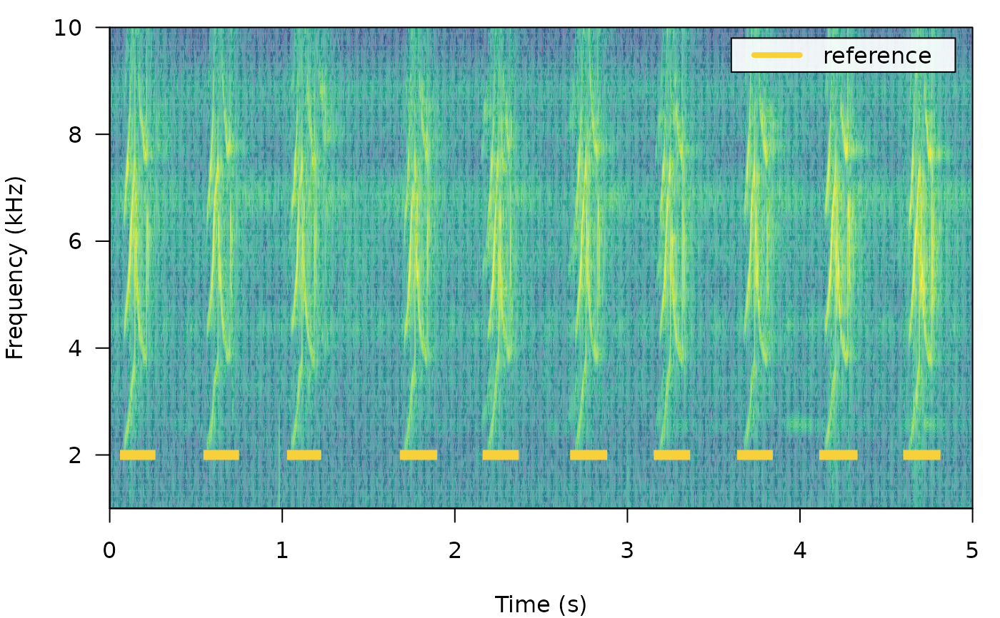

label_spectro plot a spectrogram along with amplitude envelopes or cross-corelation scores
label_spectro(wave, reference = NULL, detection = NULL, envelope = FALSE, threshold = NULL, smooth = 5, collevels = seq(-100, 0, 5), palette = viridis::viridis, template.correlation = NULL, line.x.position = 2, hop.size = NULL, ...)
| wave | A 'wave' class object. |
|---|---|
| reference | Data frame or 'selection.table' (following the warbleR package format) with the reference selections (start and end of the sound events). Must contained at least the following columns: "sound.files", "selec", "start" and "end". |
| detection | Data frame or 'selection.table' with the detection (start and end of the sound events) Must contained at least the following columns: "sound.files", "selec", "start" and "end". |
| envelope | Logical to control whether the amplitude envelope is plotted. Default is |
| threshold | A numeric vector on length 1 indicated the amplitude or correlation threshold to plot on the envelope or correlation scores respectively. Default is |
| smooth | A numeric vector of length 1 to smooth the amplitude envelope with a sum smooth function. It controls the time range (in ms) in which amplitude samples are smoothed (i.e. averaged with neighboring samples). Default is 5. 0 means no smoothing is applied. |
| collevels | Numeric sequence of negative numbers to control color partitioning and amplitude values that are shown (as in |
| palette | Function with the color palette to be used on the spectrogram (as in |
| template.correlation | List extracted from the output of |
| line.x.position | Numeric vector of length 1 with the position in the frequency axis (so in kHz) of the lines highlighting sound events. Default is 2. |
| hop.size | A numeric vector of length 1 specifying the time window duration (in ms). Default is 11.6 ms, which is equivalent to 512 'wl' for a 44.1 kHz sampling rate. |
| ... | Additional arguments to be passed to |
A spectrogram along with lines highlighting the position of sound events in 'reference' and/or 'detection'. If supplied it will also plot the amplitude envelope or corelation scores below the spectroram.
This function plots spectrograms annotated with the position of sound events. Created for graphs included in the vignette, and probably only useful for that or for very short recordings. Only works on a single 'wave' object at the time.
#' Araya-Salas, M., Smith-Vidaurre, G., Chaverri, G., Brenes, J. C., Chirino, F., Elizondo-Calvo, J., & Rico-Guevara, A. 2022. ohun: an R package for diagnosing and optimizing automatic sound event detection. BioRxiv, 2022.12.13.520253. https://doi.org/10.1101/2022.12.13.520253
Marcelo Araya-Salas (marcelo.araya@ucr.ac.cr).
{ # load example data data(list = "lbh1", "lbh_reference") # adding labels label_spectro( wave = lbh1, reference = lbh_reference[lbh_reference$sound.files == "lbh1.wav", ], wl = 200, ovlp = 50, flim = c(1, 10) ) # adding envelope label_spectro( wave = lbh1, detection = lbh_reference[lbh_reference$sound.files == "lbh1.wav", ], wl = 200, ovlp = 50, flim = c(1, 10) ) # see the package vignette for more examples }